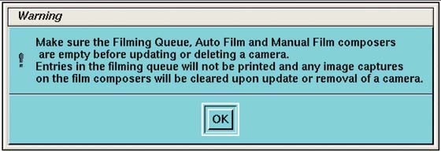
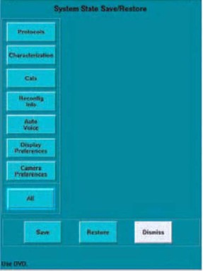
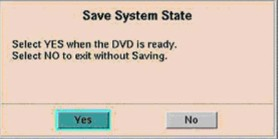

Operating Documentation
Direction 5193574-800, Rev# 22
LightSpeed 7.X Service Methods
Module Version 2.0, Version Date 6/28/11
Operating Documentation |
| Required Persons | Preliminary Reqs | Procedure | Finalization |
| 1 (FE or mechanical supplier) |
None
| NOTE: |
|
Table 1: Standard Options
| Part Number | Marketing Name | Installed Options | Comments |
| 2371127 | Smart Prep | SmartPrep | |
| 2360576 | Auto MA | AutomA | |
| 2370921 | Large Image Series | 3000 Image Series | |
| 2371407 | Connect PRO | Connect Pro | Required for Exam Split |
| 5133030 | Exam Split | Exam Split |
|
| 2360525 | Direct 3D | Direct-3D | |
| 5133028 | DMPR | Direct-MPR | Direct-MPR requires 4 GB of Host Main memory as shown in hinv; otherwise, with 2 GB the maximum images is set to 1200. |
| 5133032 | Data Export | Data Export | |
| 5133034 | Interchange, CD/DVD | Copy Composer |
Additional options must be loaded in the following order for proper operation.
Table 2: Additional Options
| Marketing Name | Installed Options | Comments |
| Neuro 3D Filter | NeuroFilter | |
| AutoFilter-and-Transfer | AutoFilter-and-Transfer | |
| HD option (64 slice) | Patient-64-Slice | |
| HD Hi-Power Option | HD Hi-Power Option | |
| Smart Score Pro | SmartScore Pro | Requires AutomA for EKG Monitor Required for Cardiac options |
| CardIQ Snapshot | CardIQ SnapShot | |
| .35 Second Rotation | Sub-0.4-Second-Scan | Requires CardIQ SnapShot |
| ECG Trace OC | EKG Viewer | Requires CardIQ SnapShot |
| Cardiac Enhancement Filter | Noise Reduction Filter | Requires CardIQ SnapShot |
| SnapShot Pulse | CardIQSnapShot-Cine | |
| DentaScan | DentaScan | |
| CTPerfusion3Neuro | CTPerfusion3Neuro | |
| Volume Viewer | VolumeViewer | Install before DMPR |
CardIQPlus OR Cardiac Pro on OC | CardIQXpressPlus OR CardIQ2XpressPro | Requires CardIQ SnapShot |
| Card EP | CardEP | |
| AdvVesselAnalysis | AdvVesselAnalysis | |
| Auto Bone | AutoBone | |
CTCBase CTCPlus CTC PRO on OC | CTColonoBase CTColonoPlus CTColonoPro | load only one |
| SmartStep | SmartStep | |
| Volume Shuttle | AxialShuttle |
Continue to Install Software Options to complete the installation.
If additional network connections are needed for this installation, complete as required. Confirm network operation.
If additional service integration is required to complete this installation, complete as required.
Verify that the system information on the service home page is correct and that system service information is present on the service desktop.
| Required Persons | Preliminary Reqs | Procedure | Finalization |
| 1 (Field Engineer) |
Data collected from data sheets. (See System Configuration Data Sheets.
Software Load Procedures manual
System Service manual.
If a DASM is required, notify the PMU that the DASM is not supported on systems with GOC6.
For details on camera configuration, refer to the Software Load Procedures manual.
For details on troubleshooting the camera, refer to the System Service manual.
Click on the [SERVICE DESKTOP] icon.
Select [CONFIGURATION] icon.
Select [INSTALL CAMERA].
Read WARNING message, and click [OK].
Illustration 1: Camera Warning

From the remote printer list select a camera, and select ADD for new install.
ADD
UPDATE
DELETE
Select [DICOM] or [POSTSCRIPT]*.
* Follow the manufacturers suggested setup instructions.
Follow the procedures on the screen.
| NOTE: | Camera and film information is required. Review this information with the customer. Data sheets are available in Service Information CD under Alignment, Setup and Calibrations. |
Return to the Home Page
Click the [SERVICE DESKTOP] icon.
Click [SHUTDOWN]
Click [REBOOT].
Restart the system.
ENABLE THE CONSOLE LAPTOP PORT
On the console in a unix shell, change user to root and enable the console laptop port:
Type: su - <ENTER>
Type the root password; press <ENTER>
Type: enableFEport<ENTER>
Insert a new Save State DVD into the Peripheral Tower DVD RAM drive.
Click the [SERVICE DESKTOP] icon.
If reloading software, click [UTILITIES].
Select [SYSTEM STATE].
Illustration 2: System State Save

Click [ALL] to select all the cals, characterizations, etc.
Click [SAVE].
If the following message appears, insert a DVD into the DVD drive and click [YES].
Illustration 3: Save System State Prompt

When completed, click [DISMISS].
Label and date the disk including the suite name.
Close the Service Desktop window at the upper left corner of the screen.